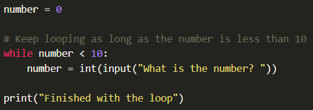
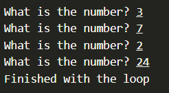
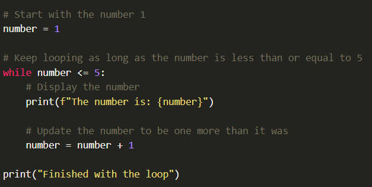
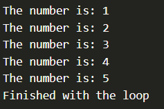
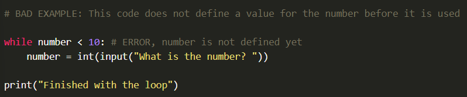
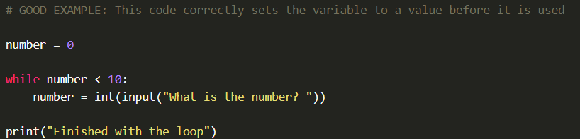
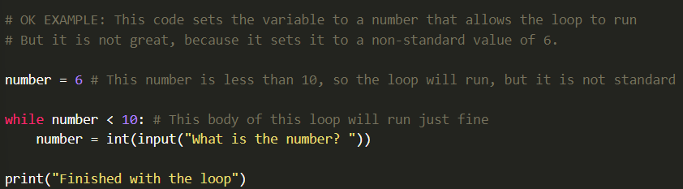
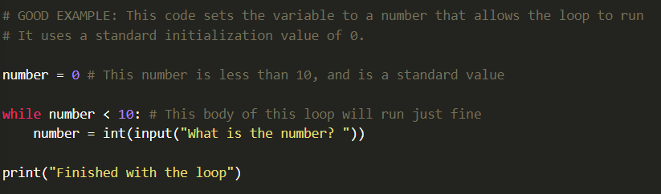
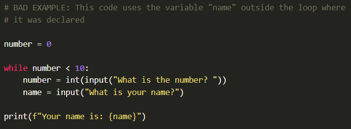
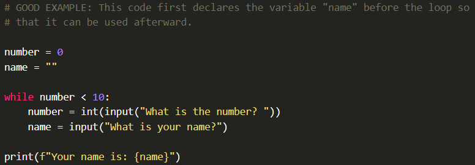

There are two tpyes of loops in Python, "while" loops and "for" loops.
Watch the following videos for more information:
A "while" loop continues while something is still true, or as long as it's true, or stated another way, "until it's no longer true."
For example, you might keep asking the user for a number as long as, or while they keep numbers under 10, and stop as soon as they enter one that is larger than that:
The output of this program could be something like the following:
This also works when the computer is updating a value, rather than getting input from the user. The following program counts up to 5 and then stops:
The output of this program could be something like the following:
Just like with "if" statements, any variables that will be used in the "while" expression, need to be declared and assigned values before they are referenced in that condition.
In the following example, the program will cause an error because it tries to check if number is less than 10, but the variable does not exist yet.
The following example corrects the mistake by declaring the variable and setting it equal to a value prior to the loop.
In the following two examples, the mistake is corrected by assigning the variable to a value that allows the loop to run.
 Notice that in the previous two examples, the variable is set to a value less than 10, so the loop will run. Technically, any number less than 10 would work (including negative numbers), but it is common practice to initialize unused integer variables to "0" or "-1", to initialize strings to "", and to initialize boolean variables to "False".
Just as you need to declare a variable before the loop if you want to use it in the condition statement, variables that are first declared inside the body of a loop (or an "if" statement) should not be used after the loop. Sometimes programming languages like Python will allow this to work, but it is not considered good practice, because it can cause bugs to arise in your code that are difficult to track down.
 